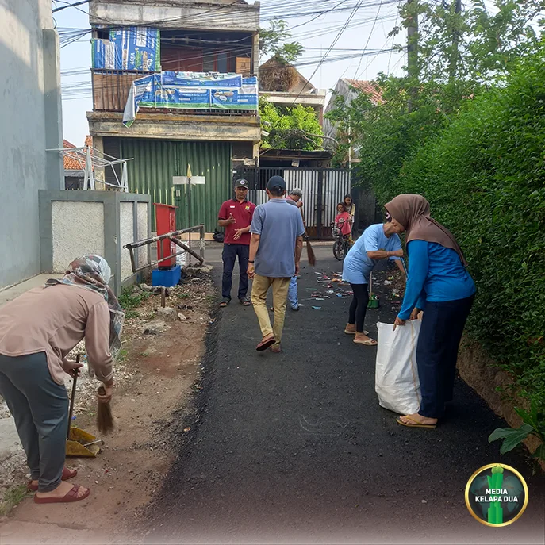
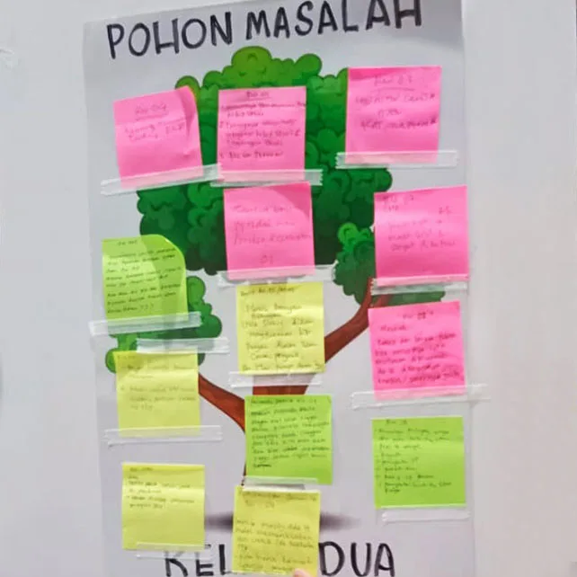
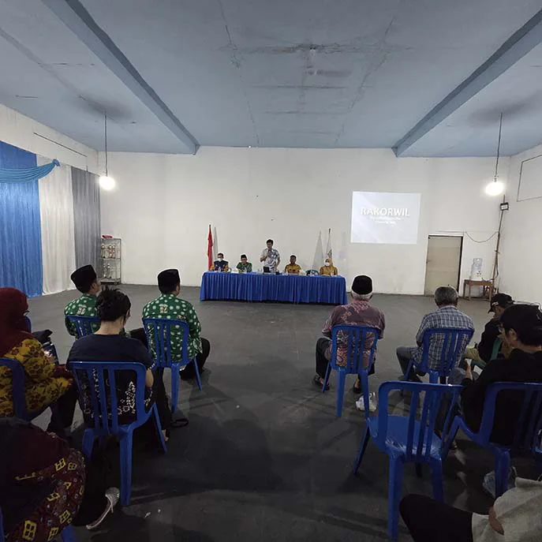
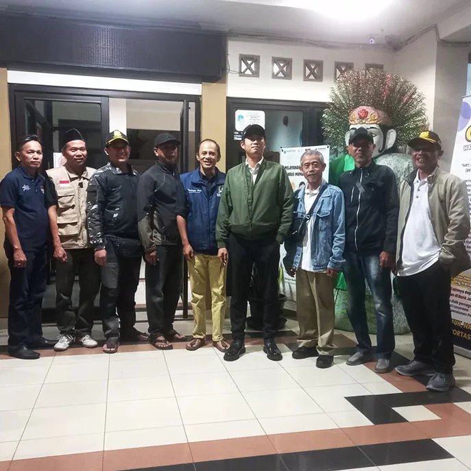
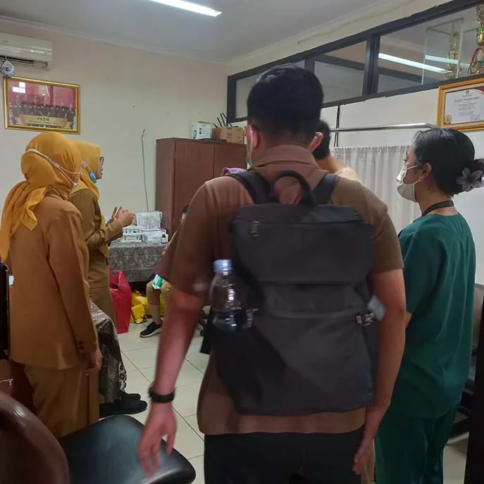
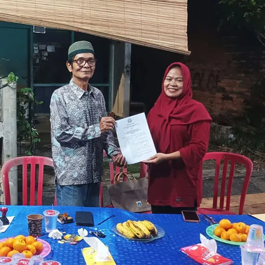
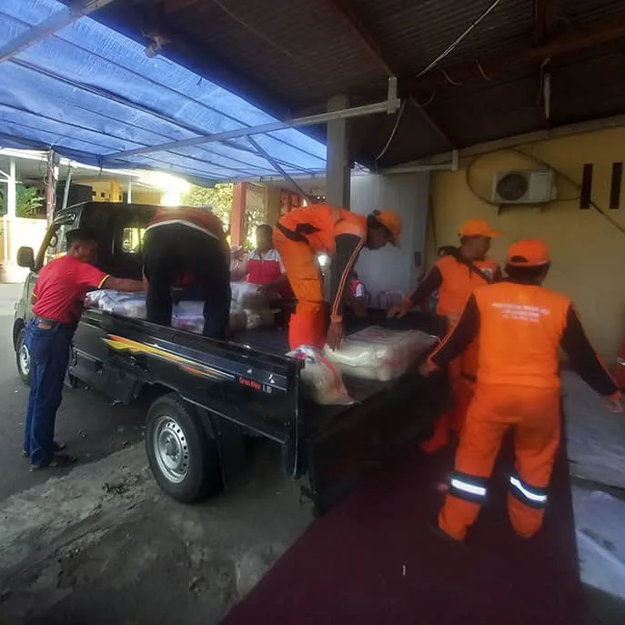
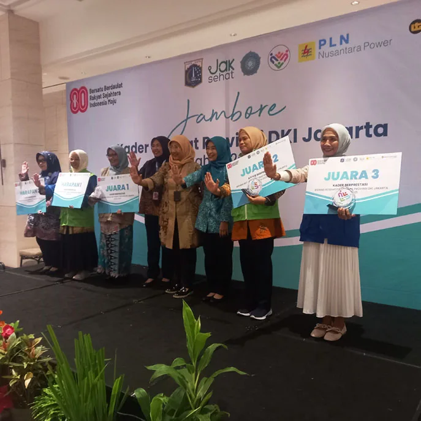
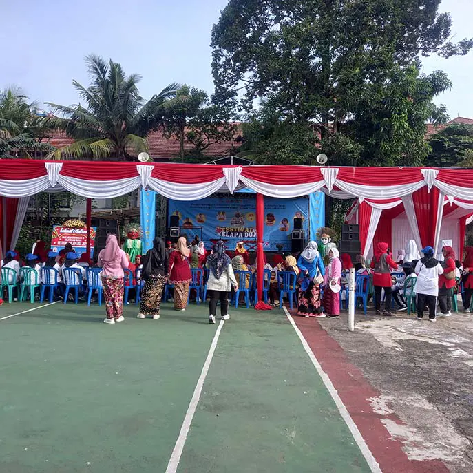
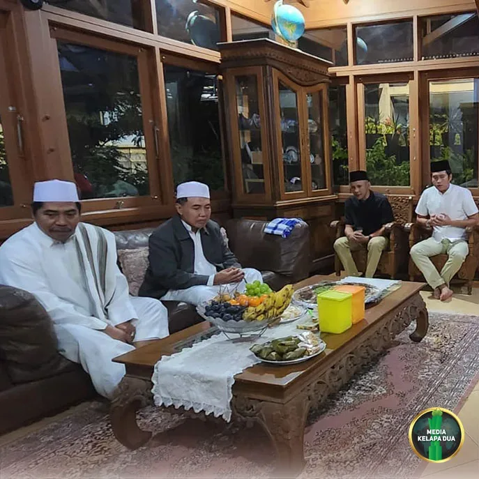

Arsip Berita

addWarga RW 08 Kelapa Dua menggelar kerja bakti menyambut Ramadhan.

addMusyawarah masyarakat untuk meningkatkan pelayanan kesehatan warga.

addRapat koordinasi untuk meningkatkan sinergi pembangunan wilayah.

addMonitoring keamanan dan ketertiban menjelang liburan akhir tahun.

addKegiatan pemeriksaan kesehatan bagi warga Kelapa Dua.

addPenyerahan Surat Keterangan Bank Sampah bagi Warga RW 08 Kelapa Dua.

addPosko RW 03 Kelapa Dua menyalurkan bantuan bencana di Sumatera.

addPrestasi kader Posyandu Kelapa Dua di tingkat Provinsi DKI Jakarta.

addFestival Kelapa Dua sebagai ajang kreativitas dan kebersamaan warga.

addPeringatan Maulid Nabi Muhammad SAW di Masjid Jami At-Taqwa.
Segera hadir artikel terbaru Media Kelapa Dua.
Segera hadir artikel terbaru Media Kelapa Dua.